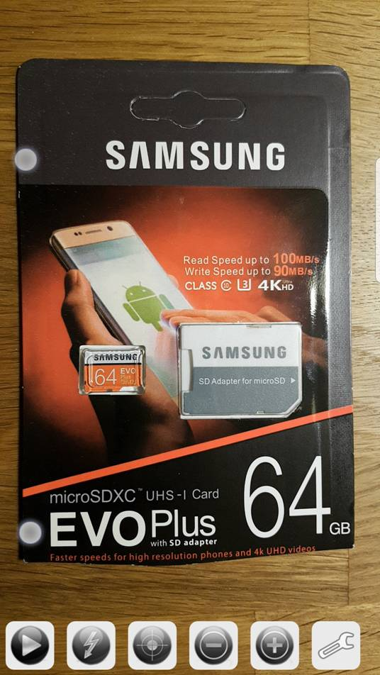
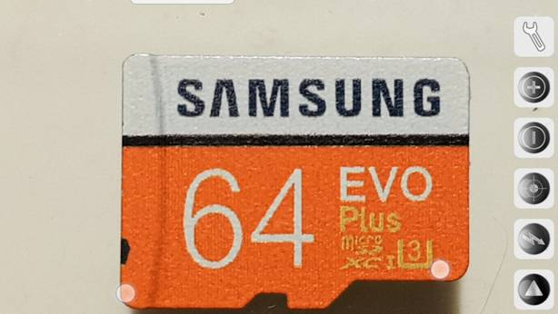
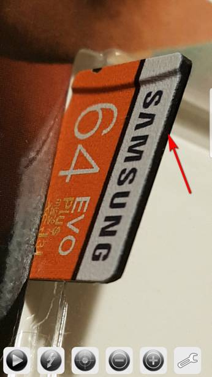
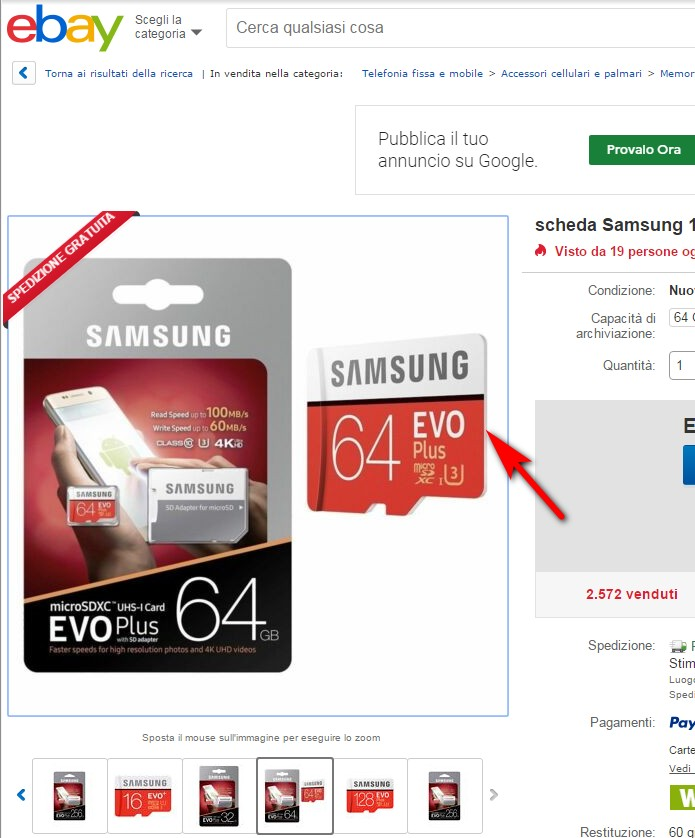
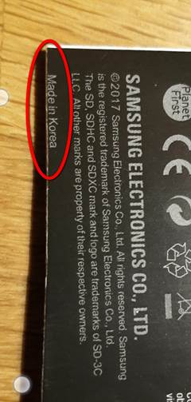
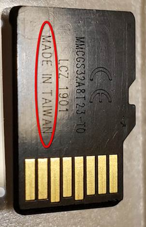
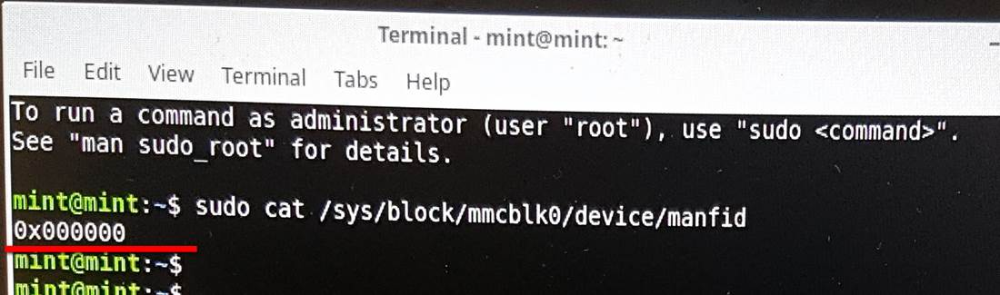
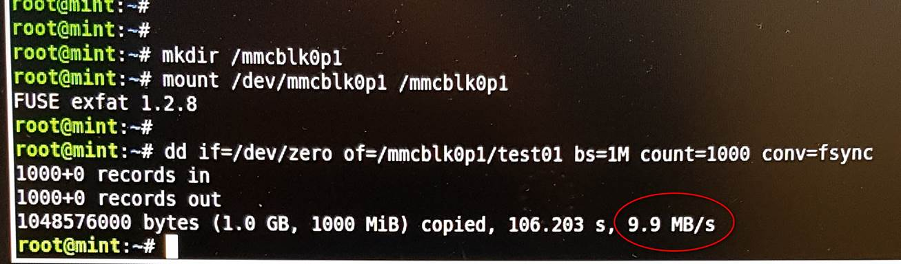

Copyright © 2019 andreoidb64
9 Marzo 2019
COME RICONOSCERE SD CARD SAMSUNG CONTRAFFATTE
Ho acquistato su ebay una SD Card della Samsung venduta come originale.
Dopo parecchie ore di lavoro perse per farla funzionare secondo le specifiche dichiarate, ho realizzato che si trattava di un componente contraffatto.
La confezione appare del tutto identica a quella delle Samsung originali:

Anche le scritte stampate sulla SD Card sono identiche:

Se però osservate il fianco della SD Card, potete notare che il materiale del supporto è di plastica NERA mentre, in quelle originali è BIANCO, così come riporta anche l’immagine dell’annuncio (guardate anche quante ne hanno già vendute - Sigh! -) :
 
Altro particolare che non corrisponde è il luogo di produzione. Sul retro della confezione (che riproduce quella originale, marchi compresi), potete leggere “Made in Korea” mentre, sul componente contraffatto, viene riportato “MADE IN TAIWAN”.

Per i più esperti, utilizzando un sistema Linux, potete controllare il “Manufacturer ID code” usando il comando: "cat /sys/block/mmcblk0/device/manfid".
Le Samsung originali, riportano "manfid"=0x00001b mentre quella contraffatta che mi hanno spedito riporta 0x000000 (no brand?).

Inutile dire, infine, che anche le prestazioni non si avvicinano nemmeno lontanamente a quelle delle SD Samsun originali, col rischio dunque di avere malfunzionamenti più o meno gravi negli apparecchi che le montano:
